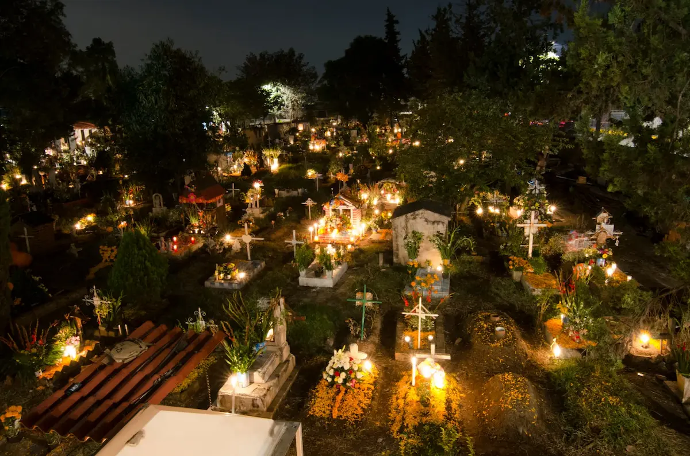

One time a year,
our departed come back
to celebrate with us
Day of the Dead (Dia De Los Muertos) is a two day holiday that reunites the living and dead. Families create ofrendas (Offerings) to honor their departed family members that have passed. These altars are decorated with bright yellow marigold flowers, photos of the departed, and the favorite foods and drinks of the one being honored. The offerings are believed to encourage visits from the land of the dead as the departed souls hear their prayers, smell their foods and join in the celebrations!
Day of the Dead is a rare holiday for celebrating death and life. It is unlike any holiday where mourning is exchanged for celebration.
“Day of the Dead is a holiday to remember loved ones by sharing a meal with them as one would when they were alive.”
